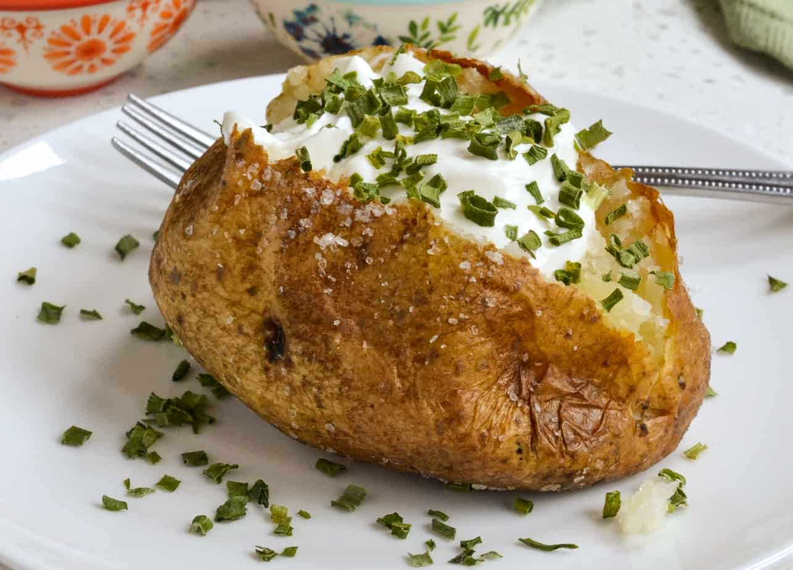

Baked Potato

A delicious yet simple meal that's also healhy
Ingredients
- 1 large russet potato (If it looks like Mr. Potato Head®, you've got the right one.)
- Canola oil to coat
- Kosher salt
- Optional toppings, such as butter, sour cream, shredded Cheddar and/or scallions
Steps
- Heat oven to 350 degrees and position racks in top and bottom thirds. Wash potato (or potatoes) thoroughly with a stiff brush and cold running water.
Dry, then using a standard fork poke 8 to 12 deep holes all over the spud so that moisture can escape during cooking. Place in a bowl and coat lightly with oil.
Sprinkle with kosher salt and place potato directly on rack in middle of oven. Place a baking sheet on the lower rack to catch any drippings
- Bake 1 hour or until skin feels crisp but flesh beneath feels soft. Serve by creating a dotted line from end to end with your fork, then crack the spud open by squeezing the ends towards one another.
It will pop right open. But watch out, there will be some steam. Add toppings if using.